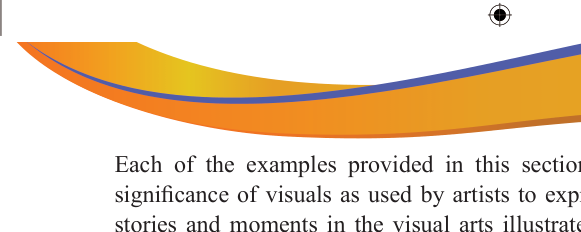

Revision exercise
The culture of any society can be expressed through its artistic trends. List down the historical artistic trend of Tanzanian art.
Edward Said Tingatinga became popular through his creative initiatives. What is the name of his style?
Tanzanian artists implemented the Ujamaa policy of the nation. Who among the artists implemented the policy through his art style?
It is believed that cultural heritage can influence the behaviour of a society and give a sense of belonging. Which artist was inspired by his/her own cultural heritage?
Making relief sculptures needs proper knowledge, otherwise the sculpture can end up breaking. What are the proper characteristics of relief sculpture?
Fine Artists find it difficult to create a Tingatinga painting. What do you think could be the reasons?
Students of a nearby school around the Kondoa Irangi rock painting site, didn’t understand why tourists used to visit the site. Explain to them why tourists visit the site.
Customers in an art exhibition hall were arguing about the technique of changing the ebony tree trunk to a well-decorated artistic sculpture. Mention to them which technique is useful for such activity?
Each art style has its specific stylistic characteristics. What is the difference between the Mashetani painting style introduced by George Lilanga and the Shetani style introduced by Samaki Likankoa?
During a Tingatinga art workshop, a facilitator insisted that “Tingatinga painting style does not follow principles of fine art. Describe this statement with examples.
Match each item in Column A against its corresponding item from Column B.
